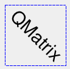
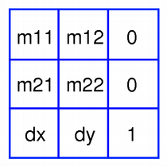

| Home · All Classes · Modules · QSS HELP · QSS 案例 · VER007 HOME |
该系列QMatrix类指定坐标系的2D变换。More...
这个类可以醃制。
该系列QMatrix类指定坐标系的2D变换。
矩阵指定如何转换，缩放，剪切或旋转的坐标系，并绘制图形时，通常使用。的QMatrix ，在对比QTransform，不允许透视变换。QTransform是Qt的建议转换类。
一个系列QMatrix对象可使用内置的setMatrix（ ）scale（ ）rotate（ ）translate（）和shear（）函数。另外，它可以通过施加建basic matrix operations。该矩阵也可以被定义时构造，并且它可以使用被重置为单位矩阵（默认值）的reset（）函数。
该系列QMatrix类支持的图形原语映射：一个给定的点，线，多边形，区域或画家路径可以映射到由坐标系定义this使用矩阵map（）函数。在情况下的四边形的，它的坐标可以用转化的mapRect（）函数。矩形也可以被改造成一个polygon（映射到定义的坐标系this矩阵），使用mapToPolygon（）函数。
系列QMatrix提供isIdentity（）函数，如果矩阵是单位矩阵，并且该方法返回True，则isInvertible（ ）函数如果矩阵是非奇异的（即AB = BA = I ），它返回True 。该inverted（ ）函数返回一个倒置的副本this矩阵，如果它是可逆的（否则返回单位矩阵） 。此外，系列QMatrix提供determinant（ ）函数返回矩阵的行列式。
最后，该系列QMatrix类支持矩阵乘法，而类的对象可以被串流播放，以及比较。
在绘制图形时，矩阵定义转换，但实际转换是由绘图函数中执行QPainter。
默认情况下，QPainter操作相关联的设备自己的坐标系上。标准坐标系统QPaintDevice有其原点位于左上角的位置。该x值向右增大;y值向下增大。有关完整说明，请参阅coordinate system文档。
QPainter有功能转换，缩放，剪切和旋转坐标系不使用的QMatrix 。例如：
|  |
void SimpleTransformation.paintEvent(QPaintEvent *) { QPainter painter(this); painter.setPen(QPen(Qt.blue, 1, Qt.DashLine)); painter.drawRect(0, 0, 100, 100); painter.rotate(45); painter.setFont(QFont("Helvetica", 24)); painter.setPen(QPen(Qt.black, 1)); painter.drawText(20, 10, "QMatrix"); } |
虽然这些功能都非常的方便，它可以更有效地建立的QMatrix和呼叫QPainter.setMatrix（ ）如果你想执行一个以上的变换操作。例如：
void CombinedTransformation.paintEvent(QPaintEvent *) { QPainter painter(this); painter.setPen(QPen(Qt.blue, 1, Qt.DashLine)); painter.drawRect(0, 0, 100, 100); QMatrix matrix; matrix.translate(50, 50); matrix.rotate(45); matrix.scale(0.5, 1.0); painter.setMatrix(matrix); painter.setFont(QFont("Helvetica", 24)); painter.setPen(QPen(Qt.black, 1)); painter.drawText(20, 10, "QMatrix"); } |

一个系列QMatrix对象包含一个3× 3的矩阵。该dx和dy元素指定水平和垂直平移。该m11和m22元素指定水平和垂直缩放。最后，本m21和m12元素指定水平和垂直shearing。
使用下列公式的QMatrix转换成在平面上的点到另一点：
x' = m11*x + m21*y + dx y' = m22*y + m12*x + dy
点(x, y)是原来的点，并(x', y')是变换点。(x', y')可以转化回(x, y)通过执行在相同的操作inverted（ ）矩阵。
各矩阵元素可以构造矩阵时进行设置，或通过使用setMatrix（ ）函数以后。它们也可以通过使用操纵translate（ ）rotate（ ）scale（）和shear（ ）的便利功能，当前设定的值可以使用检索m11（ ）m12（ ）m21（ ）m22（ ）dx（）和dy（）函数。
翻译是最简单的改造。环境dx和dy将移动坐标系dx沿X轴和单位dy沿Y轴的单位。缩放可以通过设置来实现m11和m22。例如，设置m11为2，并m221.5将增加一倍的高度，增加50％的宽度。该单位矩阵m11和m22设置为1（所有其他被设置为0）的点映射到其自身。剪切被控制m12和m21。这些元件设置值不同于零将扭转的坐标系。旋转通过仔细设置两个剪切因子和比例因子实现。
下面是使用基本的矩阵运算组合变换的例子：
void BasicOperations.paintEvent(QPaintEvent *) { double pi = 3.14; double a = pi/180 * 45.0; double sina = sin(a); double cosa = cos(a); QMatrix translationMatrix(1, 0, 0, 1, 50.0, 50.0); QMatrix rotationMatrix(cosa, sina, -sina, cosa, 0, 0); QMatrix scalingMatrix(0.5, 0, 0, 1.0, 0, 0); QMatrix matrix; matrix = scalingMatrix * rotationMatrix * translationMatrix; QPainter painter(this); painter.setPen(QPen(Qt.blue, 1, Qt.DashLine)); painter.drawRect(0, 0, 100, 100); painter.setMatrix(matrix); painter.setFont(QFont("Helvetica", 24)); painter.setPen(QPen(Qt.black, 1)); painter.drawText(20, 10, "QMatrix"); } |
构造一个单位矩阵。
所有的元素都设置为零，除了m11和m22（指定刻度），它被设置为1 。
See also reset（ ） 。
构造一个矩阵的元素，m11，m12，m21，m22，dx和dy。
See also setMatrix（ ） 。
返回矩阵的行列式。
此功能被引入Qt的4.6 。
返回水平平移因子。
See also translate（）和Basic Matrix Operations。
返回垂直平移因子。
See also translate（）和Basic Matrix Operations。
返回该矩阵的一个倒置的副本。
如果矩阵是奇异的（不可逆的） ，则返回的矩阵是单位矩阵。如果invertible是有效的（即不为0 ） ，将其值设置为True，如果矩阵是可逆的，否则设置为False 。
See also isInvertible（ ） 。
返回True如果矩阵为单位矩阵，否则返回False 。
See also reset（ ） 。
返回True如果矩阵是可逆的，否则返回False 。
See also inverted（ ） 。
返回水平缩放系数。
See also scale（）和Basic Matrix Operations。
返回垂直剪切因素。
See also shear（）和Basic Matrix Operations。
返回水平剪切的因素。
See also shear（）和Basic Matrix Operations。
返回垂直缩放系数。
See also scale（）和Basic Matrix Operations。
对应给定的坐标x和y成由该矩阵定义的坐标系。被放置在所得到的值*tx和*ty元。
则坐标值用下面的公式转化：
x' = m11*x + m21*y + dx y' = m22*y + m12*x + dy
点（x ，y）是原始的点，和（ X'，Y '）是变换后的点。
See also Basic Matrix Operations。
这是一个重载函数。
对应给定的坐标x和y成由该矩阵定义的坐标系。被放置在所得到的值*tx和*ty元。需要注意的是转换后的坐标四舍五入到最接近的整数。
这是一个重载函数。
创建并返回一个QPointF对象，它是给定一个副本point，映射到由该矩阵定义的坐标系。
这是一个重载函数。
创建并返回一个QPoint对象，它是给定一个副本point，映射到由该矩阵定义的坐标系。需要注意的是转换后的坐标四舍五入到最接近的整数。
这是一个重载函数。
创建并返回一个QLineF对象，它是给定一个副本line，映射到由该矩阵定义的坐标系。
这是一个重载函数。
创建并返回一个QLine对象，它是给定一个副本line，映射到由该矩阵定义的坐标系。需要注意的是转换后的坐标四舍五入到最接近的整数。
这是一个重载函数。
创建并返回一个QPolygonF对象，它是给定一个副本polygon，映射到由该矩阵定义的坐标系。
这是一个重载函数。
创建并返回一个QPolygon对象，它是给定一个副本polygon，映射到由该矩阵定义的坐标系。需要注意的是转换后的坐标四舍五入到最接近的整数。
这是一个重载函数。
创建并返回一个QRegion对象，它是给定一个副本region，映射到由该矩阵定义的坐标系。
调用此方法可以是相当昂贵的，如果旋转或剪切的使用。
创建并返回一个QRectF对象，它是给定一个副本rectangle，映射到由该矩阵定义的坐标系。
矩形的坐标是用下面的公式转化：
x' = m11*x + m21*y + dx y' = m22*y + m12*x + dy
如果已经指定旋转或剪切，这个函数返回bounding矩形。要检索的精确区域定rectangle映射到，使用mapToPolygon（ ）函数来代替。
See also mapToPolygon（）和Basic Matrix Operations。
这是一个重载函数。
创建并返回一个QRect对象，它是给定一个副本rectangle，映射到由该矩阵定义的坐标系。需要注意的是转换后的坐标四舍五入到最接近的整数。
创建并返回一个QPolygon给定的表示rectangle，映射到由该矩阵定义的坐标系。
矩形的坐标是用下面的公式转化：
x' = m11*x + m21*y + dx y' = m22*y + m12*x + dy
多边形和矩形的行为略有不同，当转换（由于四舍五入的整数） ，所以matrix.map(QPolygon(rectangle))并不总是相同matrix.mapToPolygon(rectangle)。
See also mapRect（）和Basic Matrix Operations。
重置矩阵单位矩阵，即所有元素都设置为零，除非m11和m22（指定刻度），其被设置为1 。
See also QMatrix（ ）isIdentity（）和Basic Matrix Operations。
旋转坐标系中给出degrees逆时针。
请注意，如果你申请一个QMatrix在小窗口坐标定义的一个点，该旋转方向将因为y轴指向下是顺时针。
返回一个引用到矩阵。
See also setMatrix（ ） 。
通过缩放坐标系sx水平和sy垂直，并返回一个引用到矩阵。
See also setMatrix（ ） 。
设置矩阵的元素为指定的值，m11，m12，m21，m22，dx和dy。
请注意，此功能取代了以前的值。QMatrix提供translate（ ）rotate（ ）scale（）和shear（ ）方便的功能来操作基于当前定义的坐标系统中的各种矩阵元素。
See also QMatrix（ ） 。
通过剪坐标系sh水平和sv垂直，并返回一个引用到矩阵。
See also setMatrix（ ） 。
移动的坐标系统dx沿x轴和dy沿着y轴，并返回引用到矩阵。
See also setMatrix（ ） 。
| PyQt 4.10.3 for X11 | Copyright © Riverbank Computing Ltd and Nokia 2012 | Qt 4.8.5 |